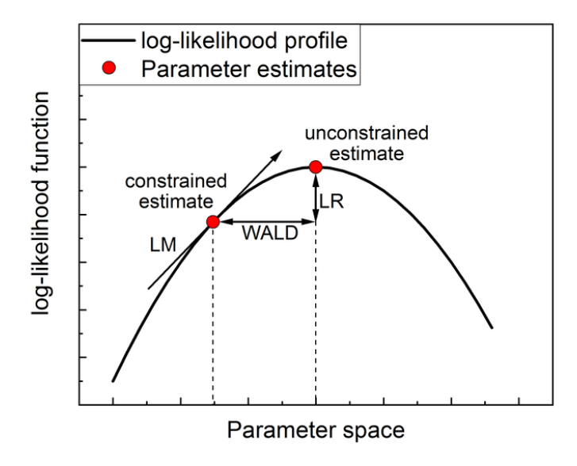
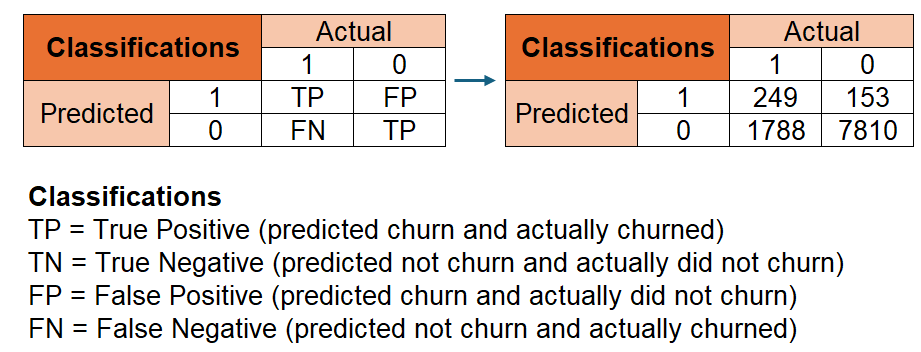
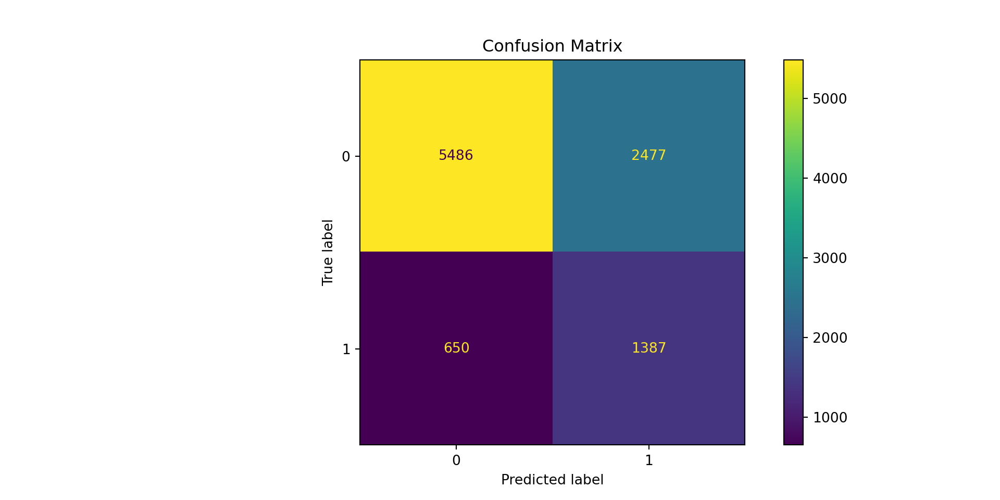
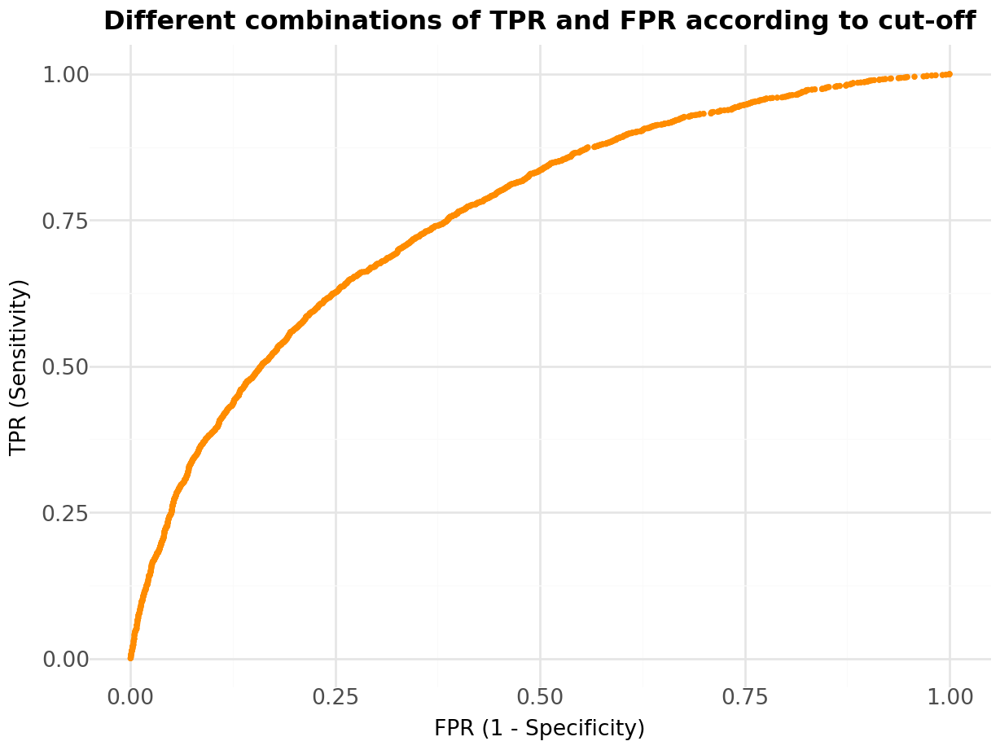
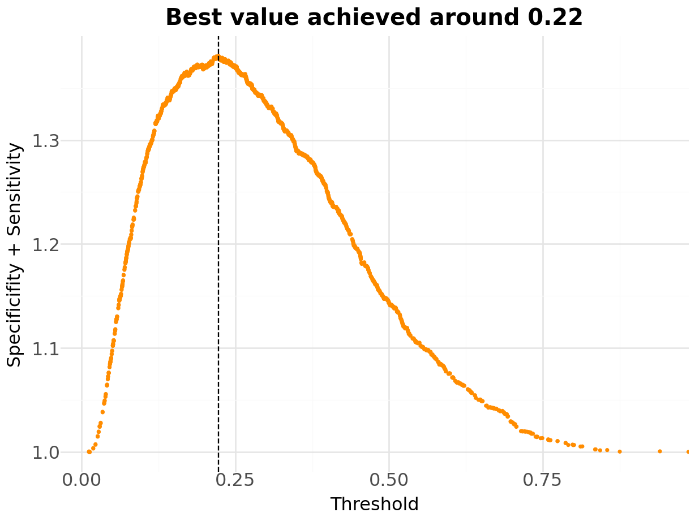
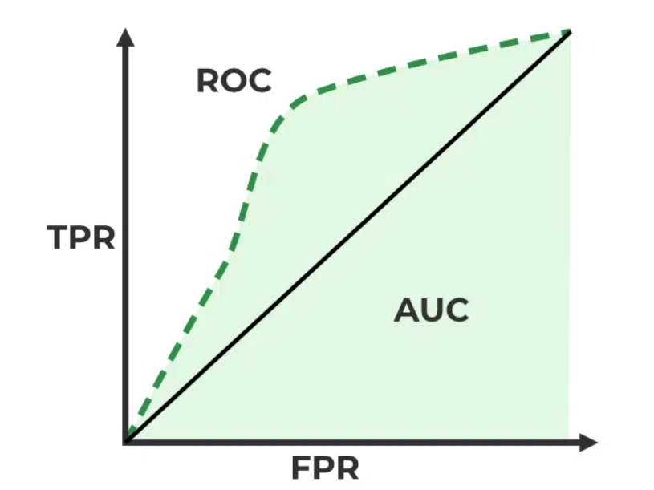

import pandas as pd
import numpy as np
import statsmodels.api as sm
from matplotlib import pyplot as plt
from matplotlib.ticker import FuncFormatter
from plotnine import *
from great_tables import GT, md
from mizani.formatters import percent_format
from scipy.stats import chi2
from sklearn.metrics import confusion_matrix, ConfusionMatrixDisplay, roc_curve, roc_auc_scoreEvaluating Logistic Regresion Outcomes
Lucas S. Macoris (FGV-EAESP)
Make sure to load all necessary packages
Evaluating Performance: Statistical Tests
In our previous discussions, we saw that \(R^2\), which was our measure of overall goodness-of-fit for linear regression models, really does not convey any relevant information for models like Logit
Furthermore, the usual t-tests, used to test hypotheses around \(\hat{\beta}\), is not applicable here
- Logistic regression assumes errors follow the logistic distribution
- Consequently, the term \(\dfrac{(\hat{\beta}-\beta_0)}{se(\hat{\beta})}\) does not follow a t-distribution
How can we test make hypothesis around Logit models and assess overall accuracy?
We’ll make use of the fact that Logit models are estimated using a likelihood function, \(\mathcal{L}\), in order to derive some important evaluation metrics
Evaluating Performance: Statistical Tests (continued)
- A model like logit is estimated using a maximum likelihood method. The likelihood of churning for a given individual \(i\), with observations \((y_i,x_i)\) can be written as
\[ \mathcal{L_i}(\beta,y_i,x_i)=[\Lambda(x_i\beta)^{y_i}]\times[1-\Lambda(x_i\beta)]^{1-y_i} \] Because we are assuming that all churn observations (i.e, al customer decisions) are i.i.d, then the likelihood of the entire sample is just the product of the individual likelihoods:
\[ \mathcal{L}(\beta,Y,X)=\prod_{i=1}^{N}[\Lambda(x_i\beta)^{y_i}]\times[1-\Lambda(x_i\beta)]^{1-y_i} \]
- In words, a maximum-likelihood estimator is trying to find the coefficients \(\beta\) that make the sample of churn observations \((y_1,y_2,...,y_n)=Y\) more likely to occur!
Evaluating Performance: Statistical Tests (continued)
What happens on the back-end is that a maximum likelihood estimator will try to find the set of parameters \(\beta\) that maximize the log-likelihood of the model, noting that the \(\log\) is a monotonic function
At the end of the day, when we want to compare models, we can think about which model has the highest log-likelihood
There are three common tests that can be used to test this type of question: the Likelihood ratio (LR) test, the Wald test, and the Lagrange multiplier test (sometimes called a score test)
These tests are sometimes described as tests for differences among nested models, because one of the models can be said to be nested within the other:
- The null hypothesis for all three tests is that the smaller model is the “true” model
- On the other hand, a large test statistics indicate that the null hypothesis is false.
Evaluating Performance: Statistical Tests (continued)
- As mentioned before, the likelihood is a function of the \(\beta\) estimates and the data. Since the data is fixed, the only way to change the likelihood is to change the estimates of the coefficients in such a way as to maximize the probability (likelihood)
Evaluating Performance: Statistical Tests (continued)

- A constrained case, as a baseline, can be the case where the \(Y\) has no predictors (i.e, all \(\beta\)’s are equal to zero)
Statistical Tests in practice - Wald Test
Optimization terminated successfully.
Current function value: 0.435323
Iterations 6| Summary Statistics | ||
|---|---|---|
| wald_stat | p_values | |
| const | −14.40 | 0.00 |
| credit_score | −2.35 | 0.02 |
| gender | −10.06 | 0.00 |
| tenure | −1.59 | 0.11 |
| balance | 10.96 | 0.00 |
| products_number | −0.78 | 0.44 |
| credit_card | −0.49 | 0.62 |
| active_member | −18.86 | 0.00 |
| estimated_salary | 1.06 | 0.29 |
| age | 28.56 | 0.00 |
# Load data
data = pd.read_csv('Assets/bank-dataset.csv')
data['gender'] = np.where(data['gender'] == 'Male', 1, 0)
# Fit logistic regression model
X = data[['credit_score', 'gender', 'tenure', 'balance', 'products_number', 'credit_card', 'active_member', 'estimated_salary','age']]
X = sm.add_constant(X) # Add constant term for intercept
y = data['churn']
# Fit logistic regression model
reg = sm.Logit(y, X).fit()
# Wald test for each coefficient
wald_stat = reg.params / reg.bse
statistics = pd.DataFrame({
'parameter': X.columns,
'wald_stat': wald_stat,
'p_values': 1 - chi2.cdf(wald_stat**2, 1)
})
Table = (
GT(statistics)
.cols_align('center')
.tab_header(title=md("**Summary Statistics**"))
.tab_stub('parameter')
.fmt_number(decimals = 2)
.opt_stylize(style=1,color='red')
)
#Output
Table.show()
#Save predictions and export it for later use
predict=pd.DataFrame({'true_y': y,'predicted_y': reg.predict()})
predict.to_csv('predicted.csv')Statistical Tests in practice - Likelihood-Ratio Test
Md(text='Likelihood Ratio Test:')Chi-square: 1403.0Degrees of freedom: 9.0P-value: 0.0Evaluating Performance: Pseudo-\(R^2\)
- McFadden’s pseudo-\(R^2\) is an alternative metric for assessing a model’s performance that also takes into account the use of the log-likelihood function:
\[ \text{pseudo-}R^2=1-(\mathcal{LL}_{FullModel}/\mathcal{LL}_{\beta=0}) \]
If your model doesn’t really predict the outcome better than the null model, and the statistic will be close to zero
Conversely, if the difference in log-likelihood is large, your test will approach 1
Optimization terminated successfully.
Current function value: 0.505489
Iterations 5McFadden's Pseudo R-squared: 0.14Evaluating Performance: Accuracy
How the estimated results compare to actual choices from customers?
- On the one hand, Logit predicted values relate to estimated probabilities
- On the other hand, actual information on churn is binary
From a practical perspective, one needs to map the estimated probabilities onto a categorization:
\[ \hat{Y}= \begin{cases} 1 \text{, if } p>p^\star\\ 0 \text{, if } p\leq p^\star \end{cases} \]
- But how do we pick \(p^\star\)?
Introducing the Confusion Matrix
- A way to assess the choice of \(p^\star\) is to analyze the confusion matrix:
- It shows how much predictions were correct by each categorization: true positives and true negatives
- It also shows how much predictions were incorrect by each categorization: false positives and false negatives
- If we agnostically set \(p^\star=0.2037\), which is the sample average of
churn, our example would yield the following terms for us:
- The number of actual churned customers that were ex-ante classified as churned
- The number of actual churned customers that were ex-ante classified as not churned
- The number of actual not churned customers that were ex-ante classified as churned
- The number of actual not churned customers that were ex-ante classified as not churned
Confusion Matrix

- Green cells indicate the True Positive and True Negative cases
- Red cells indicate the False Positive and False Negative cases
- Type I Errors (153) are the False Positive cases: we wrongly classified customers that did not churn as churned!
- Type II Errors (1788) are the False Negative cases: we wrongly classified customers that did churn as not churned!
How should a good estimator look like? Looking at Accuracy
- Overall, a good estimator should minimize the combination of Type I and Type II errors. In other words, we want our estimator to have the highest Accuracy as possible:
\[ \small ACC=\dfrac{TP+TN}{TP+FP+TN+FN}=\dfrac{1,387+5,486}{10,000}\approx 69\% \text{ correct predictions} \]
Notwithstanding, there might be cases where the costs attributed to Type I and Type II errors are fairly different!
- For example, sharing a discount coupon as a way to avoid losing a customer that was predicted to churn (Type I) while, in reality, it would not churn even without the coupon, has a much less significant cost
- Notwithstanding, losing a customer because we did not identify that he could churn (Type II) has a significant cost to the business
Sensitivity
The first question that will likely pop up during internal conversations is: how much of the churned customers we were able to correctly identify?
This question is of special interest in churn analysis, as the goal is to target these customers before they actually have their final decision!
The Sensivity (or the True Positive Rate) calculates the proportion of correctly identified churned customers by comparing the number of true positives with the total number of positives:
\[ Sensitivity=\dfrac{TP}{TP+FN}=\dfrac{1,387}{(1,387+650)}\approx 68\% \]
- Overall, it seems that our model goes a decent job in identifying 68% of the actual churned customers ahead of time!
Precision
The naivest way of identifying all churned customers is to set \(p\star=0\). In other words, if we classify all customers as churned, then, for sure, we’ll get all churned customers right!
Notwithstanding, we are wrongly classifying some customers that would not churn in the future (false negatives). In practice, if we were to give coupons to every churn customer in potential, this action would cost us much more as we’re wasting money on customers that wouldn’t churn!
The Precision calculates the how precise our churn classification was by comparing the number of true positives with the total number of predicted positives:
\[ Precision=\dfrac{TP}{TP+FP}=\dfrac{1,387}{(1,387+2,477)}\approx 35\% \]
- Although we hit a high number of churned customers, we’re wrongly classified 65% of customers as potential churners!
Specificity
The analog of the first question relates to how much of the non-churned customers we were able to correctly identify
Knowing how much non-churned customers our model predicts shed light on how much we’re able to understand about customers that do not churn!
The Specificity (or True Negative Rate) calculates the proportion of correctly identified non-churned customers by comparing the number of true negatives with the total number of negatives:
\[ Specificity=\dfrac{TN}{TN+FP}=\dfrac{5,486}{(5,486+2,477)}\approx 69\% \]
Negative Predicted Value
The last piece that is still left to analyze is the precision of our estimates for non-churned classifications
In other words, out of all the non-churn predicted customers, how much were actually false negatives?
The Negative Predicted Value calculates the proportion of correctly identified non-churned customers by comparing the number of true negatives with the predicted negatives:
\[ NPV=\dfrac{TN}{TN+FN}=\dfrac{5,486}{(5,486+650)}\approx 89.37\% \]
- Out of all negative classifications, 81.3% of them were correct!
Confusion Matrix Implementation
<sklearn.metrics._plot.confusion_matrix.ConfusionMatrixDisplay object at 0x0000020D3F186ED0>
# Predict churn using the trained logistic regression model
predicted_churn = (
(reg.predict() >= y.mean()) # Assuming a threshold of 0.5 for classification
.astype(int)
)
#Estimate the Confusion Matrix
CM=confusion_matrix(y,predicted_churn)
#cHART
ConfusionMatrixDisplay.from_predictions(y, predicted_churn)
#Title
plt.title('Confusion Matrix')
#Show
plt.show()Putting all together
- As we increase our threshold, \(p^\star\), we minimize the Type II error (i.e, we identify the churned customers) as we’re identifying the true positives
- On the other hand, at the same time, we are increasing the Type I error, since there is going to be a higher number of false positives!

Finding the optimal \(p^{\star}\)
- If, for example, we want to find \(p^{\star}\) such that it maximizes the sum of specificity + sensitivity, we can:
- Redo our confusion matrix for each \(p^{\star}=\{0,0.01,0.02,...,0.99,1\}\)
- Calculate the specificity and the sensitivity
- Pick the threshold that maximizes the sum of both metrics
- Note that, depending upon the problem, we might want to use a different criterion to find the optimal \(p^\star\)

# Predict churn probabilities
probs = reg.predict()
# Calculate specificity and sensitivity
fpr, tpr, thresholds = roc_curve(y, probs)
specificity = 1 - fpr
sensitivity = tpr
# Find the best threshold value
best_threshold_index = np.argmax(specificity + sensitivity)
best_threshold = thresholds[best_threshold_index]
#Create a pandas data.frame and plot it
result=pd.DataFrame({
'thresholds':thresholds,
'sp_se': specificity + sensitivity
})
Plot=(
ggplot(result, aes(x='thresholds',y='sp_se'))+
geom_point(size=0.5,color='darkorange')+
theme_minimal()+
geom_vline(xintercept=best_threshold,linetype='dashed')+
labs(x='Threshold',
y='Specificifity + Sensitivity',
title='Best value achieved around 0.22')+
theme(plot_title = element_text(size=15,face='bold'),
axis_text = element_text(size=12),
axis_title = element_text(size=12))
)
Plot.show()Comparing among different classifiers
Say that, for some reason, you have ommitted
agefrom the analysis. How can you assess how the predictive power of your model is going to deteriorate?One way to do this is to analyze what we call Area under the Curve (or simply AUC):

AUC under different models
- An ROC curve (receiver operating characteristic curve) is a graph showing the performance of a classification model at all classification thresholds. This curve plots two parameters:
- True Positive Rate
- False Positive Rate
AUC provides an aggregate measure of performance across all possible classification thresholds
AUC isn’t a very useful metric whenever the costs of Type I and Type II errors are very different
# Predict probabilities for both models
probs_1 = reg_1.predict()
probs_2 = reg_2.predict()
# Compute ROC curves
fpr_1, tpr_1, _ = roc_curve(y, probs_1)
fpr_2, tpr_2, _ = roc_curve(y, probs_2)
# Compute AUC scores
auc_1 = roc_auc_score(y, probs_1)
auc_2 = roc_auc_score(y, probs_2)
# Plot ROC curves
Data=pd.concat([pd.DataFrame({'Model':'Without Age','FPR':fpr_1,'TPR':tpr_1}),
pd.DataFrame({'Model':'With Age','FPR':fpr_2,'TPR':tpr_2})],axis=0)
Plot = (
ggplot(Data,aes(x='FPR',y='TPR',fill='Model'))+
geom_point(stroke=0)+
theme_minimal()+
annotate(geom='text',x=0.5,y=0.5,label=('Model 1 (without Age): ' + auc_1.round(2).astype('str')))+
annotate(geom='text',x=0.4,y=0.9,label=('Model 2 (with Age): ' + auc_2.round(2).astype('str')))+
labs(x='FPR (1 - Specificity)',
y='TPR (Sensitivity)',
title='Model with Age outperforms the other for any threshold!')+
theme(plot_title = element_text(size=20,face='bold'),
axis_text = element_text(size=12),
axis_title = element_text(size=15),
legend_position ='bottom')
)
Plot.show()# Predict probabilities for both models
probs_1 = reg_1.predict()
probs_2 = reg_2.predict()
# Compute ROC curves
fpr_1, tpr_1, _ = roc_curve(y, probs_1)
fpr_2, tpr_2, _ = roc_curve(y, probs_2)
# Compute AUC scores
auc_1 = roc_auc_score(y, probs_1)
auc_2 = roc_auc_score(y, probs_2)
# Plot ROC curves
Data=pd.concat([pd.DataFrame({'Model':'Without Age','FPR':fpr_1,'TPR':tpr_1}),
pd.DataFrame({'Model':'With Age','FPR':fpr_2,'TPR':tpr_2})],axis=0)
Plot = (
ggplot(Data,aes(x='FPR',y='TPR',fill='Model'))+
geom_point(stroke=0)+
theme_minimal()+
annotate(geom='text',x=0.5,y=0.5,label=('Model 1 (without Age): ' + auc_1.round(2).astype('str')))+
annotate(geom='text',x=0.4,y=0.9,label=('Model 2 (with Age): ' + auc_2.round(2).astype('str')))+
labs(x='FPR (1 - Specificity)',
y='TPR (Sensitivity)',
title='Model with Age outperforms the other for any threshold!')+
theme(plot_title = element_text(size=20,face='bold'),
axis_text = element_text(size=12),
axis_title = element_text(size=15),
legend_position ='bottom')
)
Plot.show()Other topics for further investigation
There are some potential topics that you may want to dive in when looking at binary choice models (not only Logit):
Look for other binary classification models, such as Probit, Random Forests, etc
- Compare different models in terms of predictive power, statistics etc
- Think about metrics to optimize your classificaiton results based on the question that you’re aiming to solve!
Bridging Econometrics with Machine Learning: there can be a variety of ways to make your analysis more robust:
- Using train/test splits and balanced samples
- Using cross-validation folds
- Comparing the classification performance across different models
- For
R, refer to thecaretpackage. For Python, refer toscikit-learn